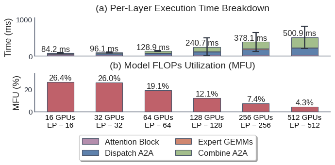
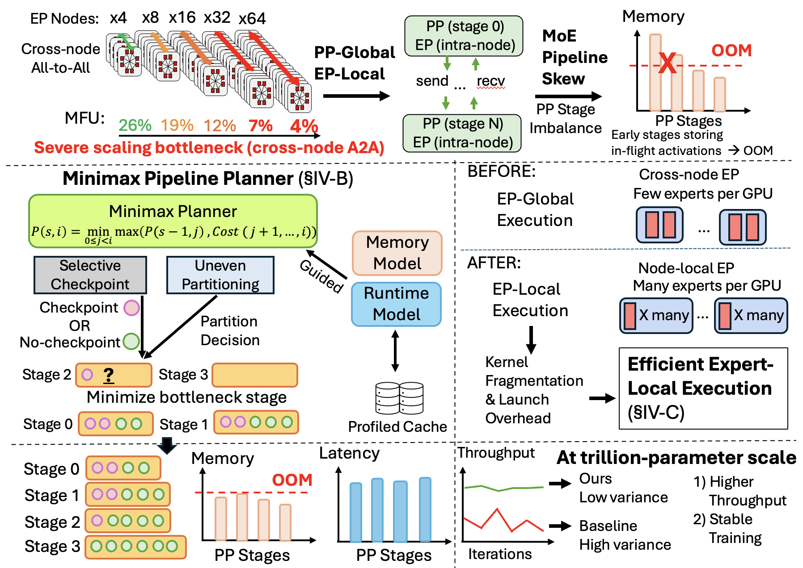
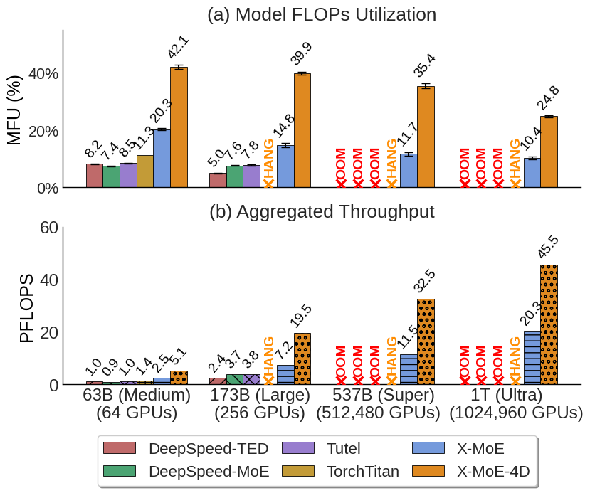
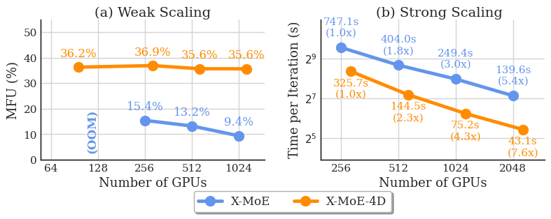
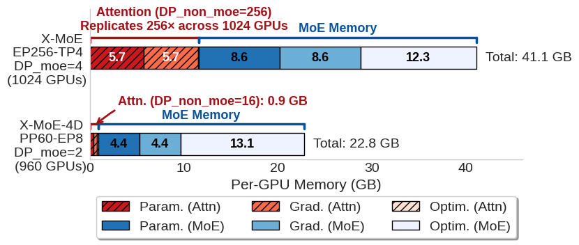
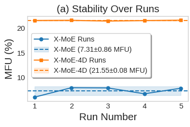

News
2026-11-17: X-MoE-4D is presented at SC 2026 in Chicago (Tuesday, November 17, 2:15 PM CST, Room W178ab, session "Scaling Complex AI Training Workloads").
We present X-MoE-4D, a distributed training system for scaling expert-specialized Mixture-of-Experts models on hierarchical HPC platforms. We observe that existing expert-parallel approaches suffer from severe scalability limits due to cross-node all-to-all communication. To address this, X-MoE-4D adopts a pipeline-global, expert-local execution model that confines expert computation within nodes while scaling across nodes via pipeline parallelism. X-MoE-4D further introduces a Minimax Pipeline Planner that jointly optimizes pipeline partitioning and activation checkpointing to minimize bottleneck stage execution time under memory constraints. Together, these techniques eliminate cross-node expert routing and mitigate MoE Pipeline Skew.
We evaluate X-MoE-4D on the Frontier supercomputer, demonstrating the first efficient 1-trillion-parameter expert-specialized MoE training on an AMD-based HPC platform. X-MoE-4D achieves 2.24× higher aggregate throughput than X-MoE at 1-trillion-parameter scale (2.4× per GPU throughput) while using fewer GPUs (960 vs. 1,024), and sustains a 3.24× speedup when strong-scaling the 173B model to 2,304 GPUs.
Mixture-of-Experts (MoE) scales large language models by activating only a subset of experts per token, so the capacity of the model grows without a proportional increase in computation. Existing MoE training systems primarily rely on expert parallelism (EP), which distributes experts across devices and dispatches tokens via all-to-all communication.
Modern MoE designs, such as Kimi K3, DeepSeek-V4, Qwen3-Next, and Llama 4, have shifted toward fine-grained experts with large top-k routing, which increase the number of experts significantly while reducing per-expert size to improve expert specialization. On hierarchical HPC platforms, this shift creates three challenges for training systems:
Under EP, tokens are dynamically routed to remote experts and gathered back across devices. As the number of experts and devices increases, cross-node traffic grows rapidly and becomes constrained by the hierarchical bandwidth of HPC interconnects such as Dragonfly. When EP grows from 16 to 512 GPUs, MFU falls from 26.4% to 4.3% (Figure 1).

Figure 1. Impact of scaling expert parallelism (EP). As EP increases, dispatch and combine all-to-all communication becomes a dominant component of MoE execution time, reducing MFU and increasing runtime variability.
Fine-grained experts with large top-k routing substantially increase routing-related activation memory, which scales with both the number of experts and the top-k routing degree. This memory can dominate the per-layer footprint and makes memory and computation costs highly uneven across layers.
Keeping experts within a node and scaling across nodes with pipeline parallelism removes the cross-node all-to-all, but pipeline execution prolongs activation lifetimes in early stages. Combined with the amplified activation memory and imbalanced compute costs of fine-grained experts, this disproportionately inflates the cost of the early pipeline stages and makes them the bottleneck for end-to-end training.

Figure 2. Overview of X-MoE-4D. EP-based scaling (top-left) suffers from cross-node all-to-all bottlenecks. X-MoE-4D adopts pipeline-global, expert-local execution (top-right) to eliminate cross-node routing, but introduces MoE Pipeline Skew (MPS) due to stage imbalance. ELM-PP (left) mitigates MPS by balancing pipeline stages via joint partitioning and checkpointing. Efficient expert-local execution (right) improves utilization by reducing kernel fragmentation.
Expert parallelism is kept within each node, so all expert routing runs over the high-bandwidth intra-node interconnect, while cross-node scaling uses pipeline parallelism. This aligns MoE execution with the hardware topology and eliminates cross-node expert routing. The aggregate memory of a node is sufficient to host a full MoE layer even at trillion scale (512 GB across 8 GCDs on Frontier).
A skew-aware pipeline planner that jointly optimizes stage partitioning and activation checkpoint placement to minimize the execution time of the slowest stage under per-GPU memory constraints. It combines selective checkpointing with uneven layer partitioning, guided by a memory model and a runtime model, and solves the partitioning by dynamic programming on top of the 1F1B schedule.
Confining experts within each node co-locates tens of fine-grained experts (e.g., 64) on each GPU, which fragments expert computation into many small kernels. X-MoE-4D uses GroupGEMM with two backends, Primus-Turbo's Composable Kernel (CK) for AMD GPUs and a Triton implementation for cross-platform support; both aggregate per-expert work into larger persistent kernels.
We evaluate X-MoE-4D on the Frontier supercomputer (AMD MI250X GPUs connected by a Dragonfly network) with up to 2,304 GPUs, on expert-specialized MoE models from 10B to 1T parameters, against DeepSpeed-MoE, DeepSpeed-TED, Tutel, TorchTitan, and X-MoE.

Figure 3. Training performance across model scales (63B–1T) on Frontier. (a) Model FLOPs Utilization (MFU). (b) Aggregate throughput (PFLOPS). X-MoE-4D achieves the highest MFU and throughput across all scales.

Figure 4. Scalability of X-MoE-4D vs. X-MoE on the 173B model. (a) Weak scaling. (b) Strong scaling. X-MoE-4D maintains high efficiency and achieves faster iteration time. The performance gap widens with scale.

Figure 5. Per-GPU model state memory at 1T scale. Comparison of the highest throughput X-MoE and X-MoE-4D configurations. X-MoE-4D reduces per-device model-state memory from 41.1 GB to 22.8 GB.

Figure 6. Coefficient of variation (std/mean) in runs. X-MoE has high variability (CV 11.8%). X-MoE-4D remains stable (CV = 0.4%).
Integration: X-MoE-4D is implemented on top of PyTorch and DeepSpeed, extending X-MoE with 1F1B pipeline parallelism and the skew-aware planner. The code is in the X-MoE repository.
@inproceedings{wang2026xmoe4d,
title={X-MoE-4D: Breaking the Scaling Barrier for Trillion Parameter MoEs on Hierarchical HPC Systems},
author={Zixian Wang and Liheng Jing and Emily Herron and Sajal Dash and Feiyi Wang and Minjia Zhang},
booktitle={Proceedings of the International Conference for High Performance Computing, Networking, Storage and Analysis (SC '26)},
year={2026},
address={Chicago, IL, USA},
publisher={IEEE},
}